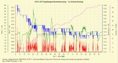
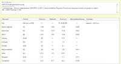
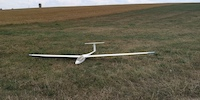
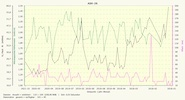

2001-02, ASH 26, 3,6m Spannweite und dem SD7032 als Flächenprofil, Wölbklappen, 3,8 Kg Masse.
Den ASH 26 Rumpf habe ich wieder von Gewalt aus Reutlingen, die Flächen wie üblich, aus Styropor mit Abachi beplankt, gebaut. Wegen des sehr dünnen Profils und der relativ großen Wölbung habe ich das Abachifurnier mit Diagonal-Kohlegewebe verklebt (Torsion). Für die Flächen habe ich Multiplex FL BB Servos mit einer Dicke von 11 mm verwendet. Die Servos schließen bei den Wölbklappen sehr schön unterkantenbündig ab. Leider gelingt das bei den Querrudern nicht ganz, hier steht die Servohinterkante ca. 1 mm heraus.
Der Segler reagiert hervorragend auf Thermik und lässt sich mit nach unten gesetzten Klappen sehr gut kreisen. Durch das nicht ganz geringe Gewicht hat er auch einen guten Durchzug und kann bis zu 20 km/Std Windgeschwindigkeiten geflogen werden.
Den Plan habe ich mit dem kostenlosen 2D CAD Programm Solid Edge gezeichnet(ASW26_Fluegel.pdf).
Auch bei diesem Modell habe ich den Stromverbrauch und die Versorgungsspannungslage vermessen. Die Versorgung des Empfängers und der Servos (8 Stück) erfolgt über einen NiMh 3200 mAh Akku.
 
Die Grafiken wurden mit dem kostenlosen Open-Source-Programm DataExplorer erstellt.
Auch dieses Modell hat später einen Umbau mit Torcman Motor erhalten. Die ersten Aufzeichnungen mit Antrieb gibt es ab dem Jahr 2018. Verwendet wird neben dem Torcman Motor ein Graupner +T 70 Regler gespeist über einen 4S 2200mAh Akku. Auch ein UltraGuard Backup Akku wird für die Versorgung der Empfangsanlage eingesetzt. Die Masse des Modells ist dadurch auf 3,8 kg gestiegen. In der Historien-Auswertung des DataExplorer sieht man wie stark der Innenwiderstand, des über die Jahre verwendeten Antriebs-Akkus, schwankt. Für die im Steigflug verwendete Kapazität pro Höhenmeter scheint sich das aber wenig auszuwirken. Dennoch die abfallende Spannung sorgt dafür, dass bei zu großem Innenwiderstand des Antriebakkus die Kapazität weniger ausgenutzt werden kann.
 